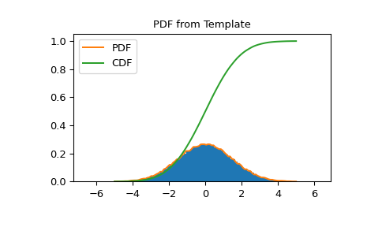

scipy.stats.rv_histogram¶
- class scipy.stats.rv_histogram(histogram, *args, **kwargs)[source]¶
Generates a distribution given by a histogram. This is useful to generate a template distribution from a binned datasample.
As a subclass of the
rv_continuousclass,rv_histograminherits from it a collection of generic methods (seerv_continuousfor the full list), and implements them based on the properties of the provided binned datasample.- Parameters
- histogramtuple of array_like
Tuple containing two array_like objects The first containing the content of n bins The second containing the (n+1) bin boundaries In particular the return value np.histogram is accepted
Notes
There are no additional shape parameters except for the loc and scale. The pdf is defined as a stepwise function from the provided histogram The cdf is a linear interpolation of the pdf.
New in version 0.19.0.
Examples
Create a scipy.stats distribution from a numpy histogram
>>> import scipy.stats >>> import numpy as np >>> data = scipy.stats.norm.rvs(size=100000, loc=0, scale=1.5, random_state=123) >>> hist = np.histogram(data, bins=100) >>> hist_dist = scipy.stats.rv_histogram(hist)
Behaves like an ordinary scipy rv_continuous distribution
>>> hist_dist.pdf(1.0) 0.20538577847618705 >>> hist_dist.cdf(2.0) 0.90818568543056499
PDF is zero above (below) the highest (lowest) bin of the histogram, defined by the max (min) of the original dataset
>>> hist_dist.pdf(np.max(data)) 0.0 >>> hist_dist.cdf(np.max(data)) 1.0 >>> hist_dist.pdf(np.min(data)) 7.7591907244498314e-05 >>> hist_dist.cdf(np.min(data)) 0.0
PDF and CDF follow the histogram
>>> import matplotlib.pyplot as plt >>> X = np.linspace(-5.0, 5.0, 100) >>> plt.title("PDF from Template") >>> plt.hist(data, density=True, bins=100) >>> plt.plot(X, hist_dist.pdf(X), label='PDF') >>> plt.plot(X, hist_dist.cdf(X), label='CDF') >>> plt.show()
 - Attributes
random_stateGet or set the generator object for generating random variates.
Methods
__call__(*args, **kwds)Freeze the distribution for the given arguments.
cdf(x, *args, **kwds)Cumulative distribution function of the given RV.
entropy(*args, **kwds)Differential entropy of the RV.
expect([func, args, loc, scale, lb, ub, …])Calculate expected value of a function with respect to the distribution by numerical integration.
fit(data, *args, **kwds)Return estimates of shape (if applicable), location, and scale parameters from data.
fit_loc_scale(data, *args)Estimate loc and scale parameters from data using 1st and 2nd moments.
freeze(*args, **kwds)Freeze the distribution for the given arguments.
interval(alpha, *args, **kwds)Confidence interval with equal areas around the median.
isf(q, *args, **kwds)Inverse survival function (inverse of
sf) at q of the given RV.logcdf(x, *args, **kwds)Log of the cumulative distribution function at x of the given RV.
logpdf(x, *args, **kwds)Log of the probability density function at x of the given RV.
logsf(x, *args, **kwds)Log of the survival function of the given RV.
mean(*args, **kwds)Mean of the distribution.
median(*args, **kwds)Median of the distribution.
moment(n, *args, **kwds)n-th order non-central moment of distribution.
nnlf(theta, x)Negative loglikelihood function.
pdf(x, *args, **kwds)Probability density function at x of the given RV.
ppf(q, *args, **kwds)Percent point function (inverse of
cdf) at q of the given RV.rvs(*args, **kwds)Random variates of given type.
sf(x, *args, **kwds)Survival function (1 -
cdf) at x of the given RV.stats(*args, **kwds)Some statistics of the given RV.
std(*args, **kwds)Standard deviation of the distribution.
support(*args, **kwargs)Support of the distribution.
var(*args, **kwds)Variance of the distribution.